La impresión 3D, también conocido como fabricación aditiva, es un tipo de tecnologías donde un objeto
tridimensional es creado mediante la superposición de capas sucesivas de material.
Las impresoras 3D ofrecen la capacidad de imprimir partes hechas de diferentes materiales, que pueden ensamblarse juntas para crear algún producto
mas complejo. Al mismo tiempo, permiten la fabricación de productos personalizados que se ajustan a las necesidades de cada usuario, impulsando a
sí la personalización en masa en el desarrollo de productos.
Desde 2003 ha habido un gran crecimiento en la venta de impresoras 3D. De manera inversa, el coste de las mismas se ha reducido. Esta tecnología
también encuentra uso en campos tales como joyería, calzado, diseño industrial, arquitectura, ingeniería y construcción, automoción y sector
aeroespacial, industrias médicas, educación, sistemas de información geográfica, ingeniería civil y muchos otros.
Formas impresas en 3D
▪ Campo médico: La impresión 3D se utiliza para fabricar prótesis personalizadas adaptadas a
las necesidades de cada paciente, implantes dentales y reemplazos óseos con un ajuste anatómico preciso, además de modelos quirúrgicos
detallados que ayudan a los profesionales de la salud en la planificación de intervenciones médicas.
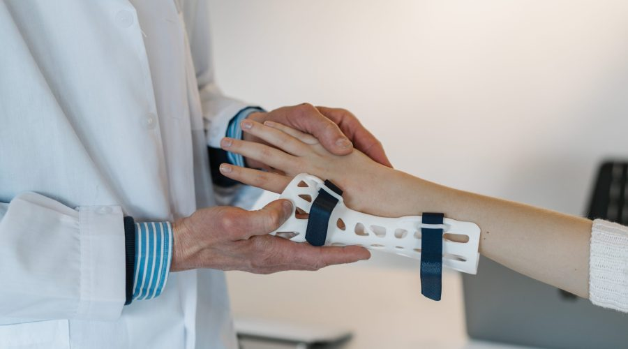
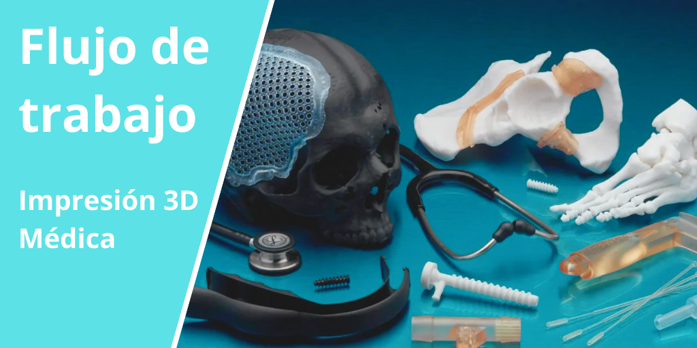
▪ Industria aeroespacial y automotriz: Permite producir componentes ligeros y resistentes, como piezas de motor, soportes y álabes
de turbina con geometrías complejas que mejoran el rendimiento. También facilita la fabricación de piezas con estructuras internas avanzadas,
reduciendo la necesidad de soportes y optimizando el uso de materiales.
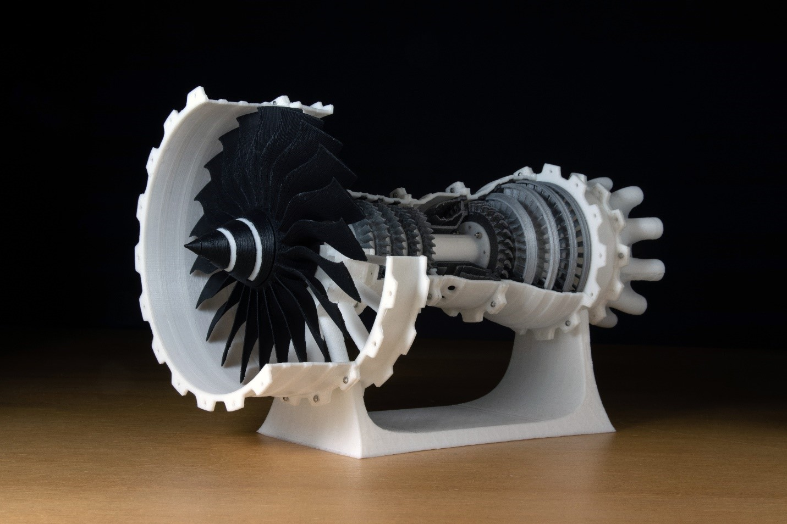
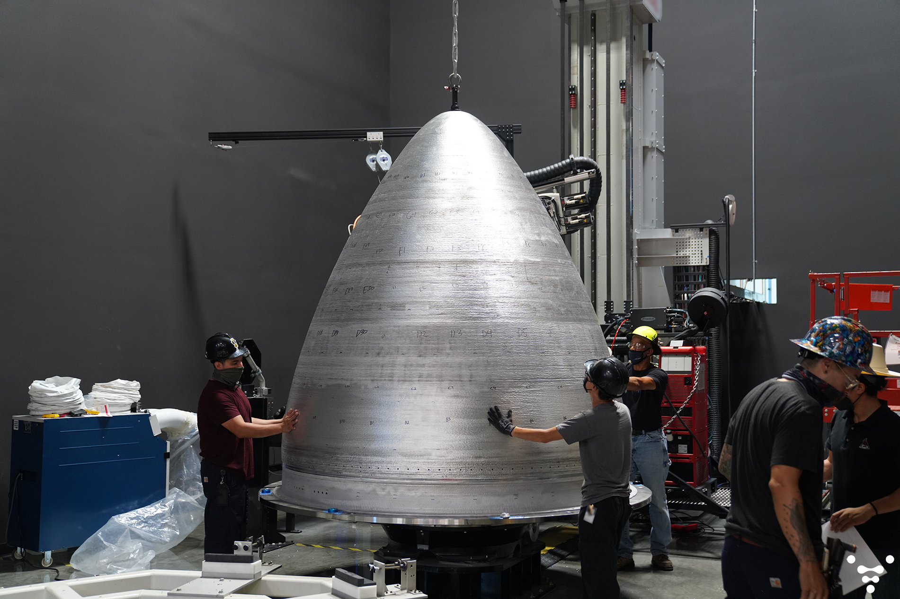
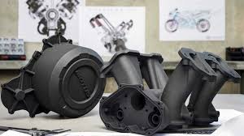
▪ Bienes de consumo: Se emplea para crear productos personalizados, como fundas para teléfonos, joyas y artículos decorativos
para el hogar. Asimismo, permite desarrollar prototipos de manera rápida, facilitando la prueba y mejora de nuevos diseños.
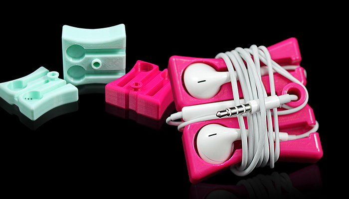
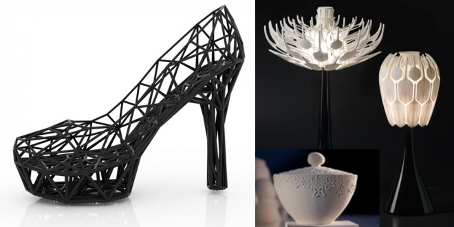
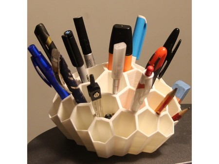
▪ Arquitectura y construcción: Se utiliza para elaborar maquetas arquitectónicas detalladas que ayudan en la visualización y
planificación de proyectos, además de fabricar componentes constructivos personalizados, como paneles de fachada y elementos decorativos.
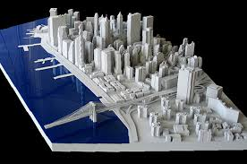
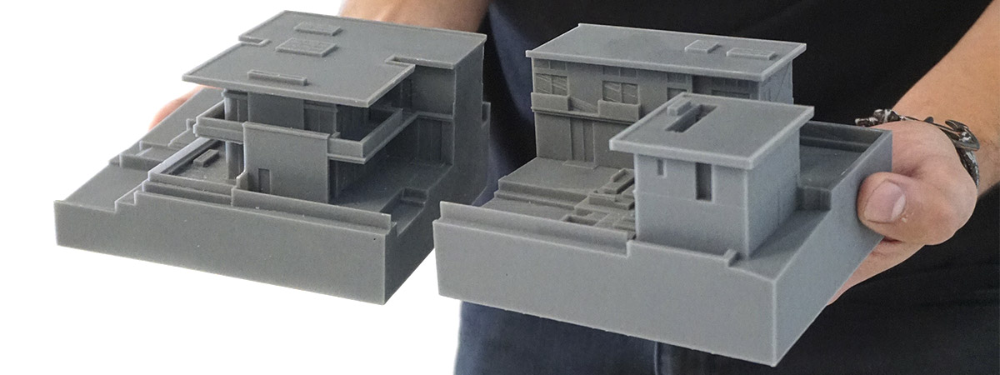
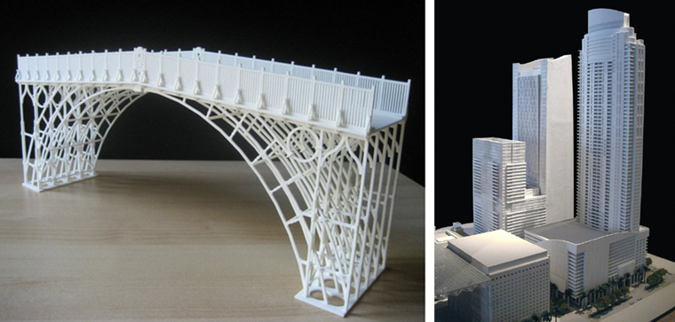
✔️ Ventajas
La impresión 3D ofrece una gran libertad de diseño al permitir la creación de formas complejas que no pueden
fabricarse fácilmente con métodos tradicionales. También permite la personalización de productos, reduce tiempos y costos de producción, y
disminuye el desperdicio de materiales al utilizar únicamente la cantidad necesaria para fabricar cada objeto.
❌ Desventajas
Entre las principales limitaciones se encuentran la disponibilidad de materiales, la necesidad de realizar
acabados posteriores para mejorar la superficie de las piezas, el uso de estructuras de soporte en diseños complejos y las restricciones
de tamaño impuestas por el área de impresión de la impresora.
El futuro de las formas impresas en 3D
El futuro de las formas impresas en 3D evoluciona rápidamente, con nuevos materiales y posibilidades de diseño que surgen cada año. A medida que la comunidad crece, compartir tus creaciones se vuelve aún más importante: publica tus propios modelos para contribuir a la comunidad de impresión 3D e inspirar a otros. Los recursos y mercados en línea continúan expandiéndose, y la tienda ahora funciona como un centro neurálgico para descubrir, comprar y compartir modelos impresos en 3D, facilitando a los usuarios el acceso a una amplia variedad de diseños.
De cara al futuro, la integración de componentes electrónicos como placas de circuito impreso y sensores en objetos impresos en 3D revolucionará
la forma en que diseñamos y utilizamos estos objetos, permitiendo creaciones más inteligentes y funcionales. Con el avance de la tecnología,
cabe esperar aplicaciones aún más innovadoras y oportunidades de colaboración dentro del ecosistema de la impresión 3D.
Conclusión
La versatilidad de las formas impresas en 3D está transformando la manera en que diseñamos y fabricamos
objetos. Desde dispositivos médicos hasta componentes aeroespaciales, la capacidad de crear formas complejas y personalizadas de forma
rápida y eficiente está abriendo nuevas vías de innovación y creatividad.
A medida que la tecnología sigue avanzando, las posibilidades de las formas impresas en 3D son ilimitadas, allanando el camino hacia un futuro
donde el único límite es nuestra imaginación.